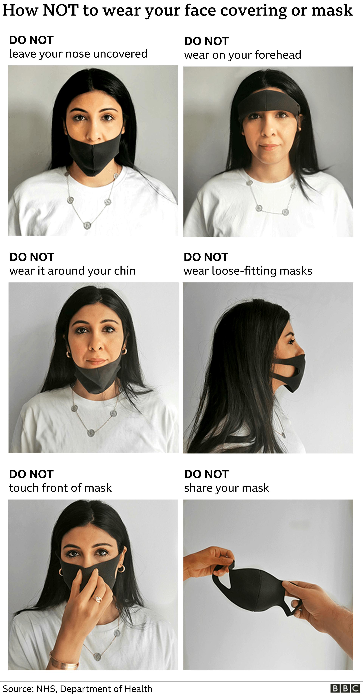

US health advisors now say people who have been fully vaccinated against Covid-19 can gather unmasked with others who have been vaccinated.
They can also visit unvaccinated people from one other household indoors without masks or distancing so long as the unvaccinated people are not at high risk for severe Covid-19. But they should still wear masks when out in public.
The UK has yet to make such recommendations, however.
What are the rules for face coverings?
Face coverings and masks reduce the spread of coronavirus droplets from coughs, sneezes and speaking.
Currently, people in the UK are asked to wear them where social distancing is not possible and the virus could easily pass between people - for example on public transport, or in shops.
Cutting transmission is important because there is still lots of the virus circulating and many people are yet to be protected by vaccination.
The exact rules can be seen here for:
In England and Northern Ireland the police can issue a £200 fine for not following the rules. In Scotland and Wales, a £60 fine can be imposed. Repeat offenders face bigger fines.
Will we have to keep wearing masks or face coverings?
Once more people have had a vaccine and more is known about how they affect the transmission of Covid, other measures to limit its spread can be reviewed, the government says.
This will include the wearing of face masks or coverings.
They might still be needed in some circumstances and particularly during winter, however.
Health Secretary Matt Hancock has said he hopes they would become the norm on public transport as a matter of "personal responsibility".
Do pupils have to wear masks at school?
Pupils in secondary schools in England may be required to wear masks in classrooms, at least until the Easter break.
Each nation has different rules:
-
In England , secondary schools require face coverings in communal areas and classrooms where social distancing of 2m is not possible. They are now also recommended in early years and primary schools, for staff and adult visitors where social distancing between adults is not possible
-
The Scottish government , says all secondary school pupils should wear face coverings in corridors and communal areas, and senior pupils (years S4-S6) and their teachers must wear them in class
-
All staff in Scottish schools must wear masks where social distancing is not possible
-
In Wales, ,face coverings are recommended in high schools when social distancing is "unlikely to be maintained"
-
In Northern Ireland ,face coverings must be worn in the corridors of post-primary schools and on public and school transport
Why should I wear a mask?
The main purpose of face coverings is to protect other people from coronavirus, rather than yourself. If everyone wears one, the risk for all goes down.
When worn correctly, they should cover the nose and mouth - the main confirmed sources of transmission.
They can help to reduce the spread of the virus from people who are contagious, including those who have no symptoms.
There is also evidence they can offer some protection to the wearer, although they are not a replacement for social distancing and hand-washing.
Face covering, mask or both?
Tips for the wearer include:
- Choose a mask or face covering with a nose wire
- Check it fits snugly over the mouth, nose and chin
- Make sure it has at least a couple of layers
- Tie a knot in the ear loops of surgical masks to make a better fit
The highest level of protection is provided by FFP3 (or similar) masks worn by healthcare workers in high risk settings to safely do their job.
In some countries, such as Germany and Austria, medical-grade masks (such as disposable surgical ones) are compulsory on public transport and in shops.
These are made from non-woven fabric, which is better at stopping spray and droplets.
Cloth face coverings do not give the wearer as much protection.
But the World Health Organization says it has no plans to change its guidance recommending fabric face masks for the general public.
Who is exempt from wearing face masks?
Some people do not have to wear a face covering. They include:
- Children (under 11 in England or Wales, under 13 in Northern Ireland, under five in Scotland)
- Those unable to put on or wear a face covering because of a physical or mental illness or disability
- People for whom wearing or removing a face covering will cause severe distress
- Anyone assisting someone who relies on lip reading to communicate
Young children should not wear face masks because of the risk of choking and suffocation.
Can I make one myself?
The BBC has created a guide on how to make your own face covering.
The government has issued its own advice too.

What do I need to know about the coronavirus?
- SOCIAL DISTANCING: What are the rules now?
- SUPPORT BUBBLES: What are they and who can be in yours?
- SCHOOLS: What will happen if children catch coronavirus?
- TESTING: What tests are available?
- SYMPTOMS: What are they and how to guard against them?